O meu nome é Dinis Soares, tenho 21 anos e tirei uma licenciatura em Tecnologias Multimédia. Desde sempre que o cinema, a fotografia e tudo o que rodeia a produção audiovisual me fascinam e foi exatamente isso que me levou a seguir este caminho.
Ao longo dos últimos anos, fui construindo o meu percurso de forma prática, realizei vários estágios curriculares na área da multimédia, participei na cobertura de eventos como fotógrafo e editor e cheguei a liderar equipas de produção na minha universidade, cada projeto da qual fiz parte foi uma lição valiosa sobre a área.
Domino ferramentas da Adobe, tenho experiência em fotografia, captação e edição de vídeo, e estou sempre à procura de aprender mais, seja sobre cinematografia, narrativa visual ou produção de conteúdo.
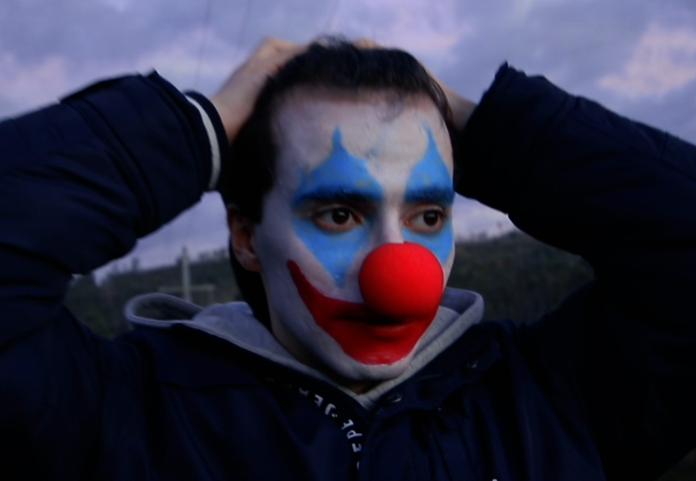

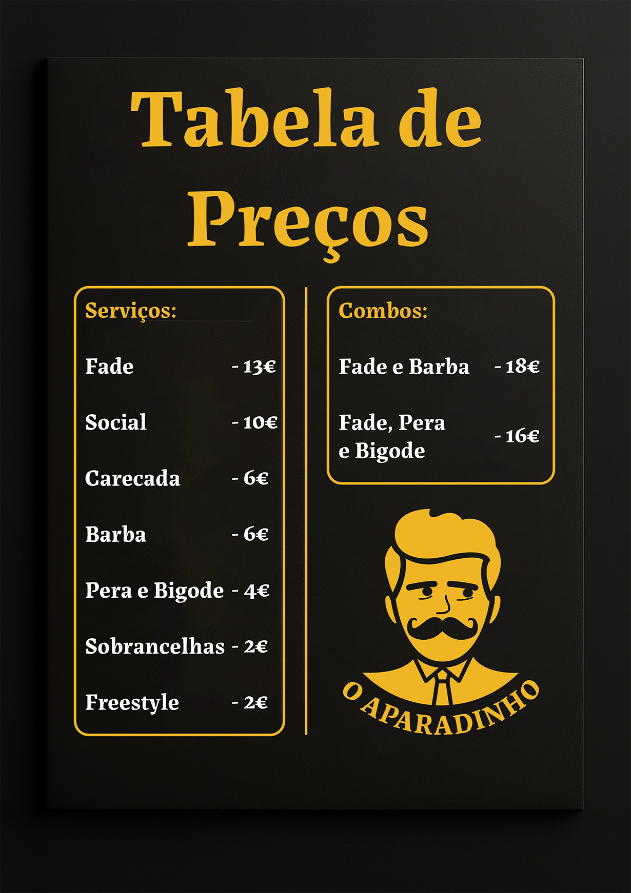
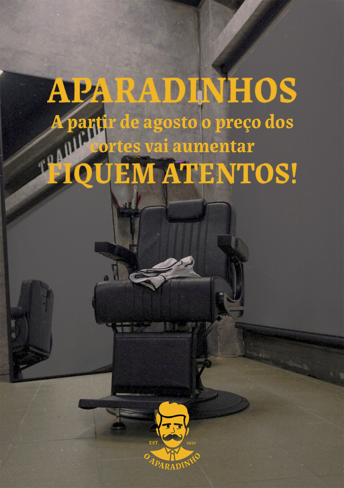
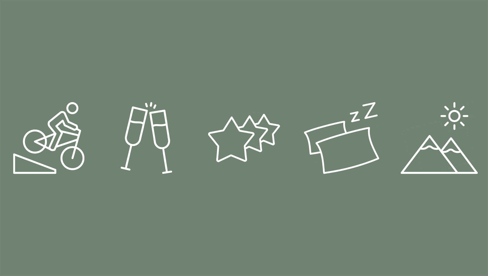
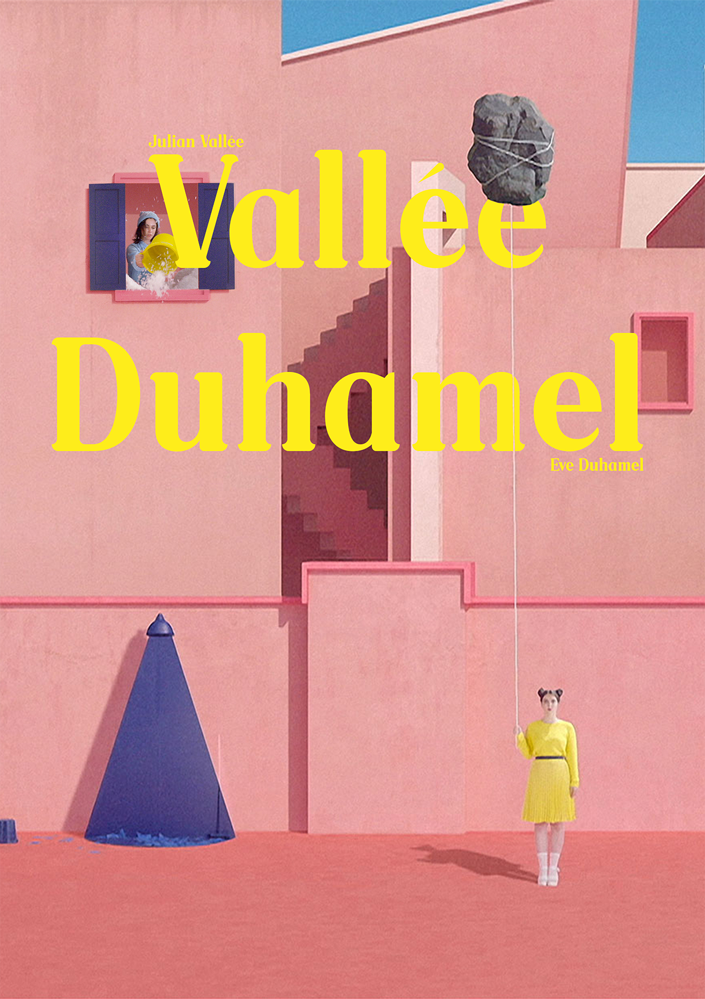
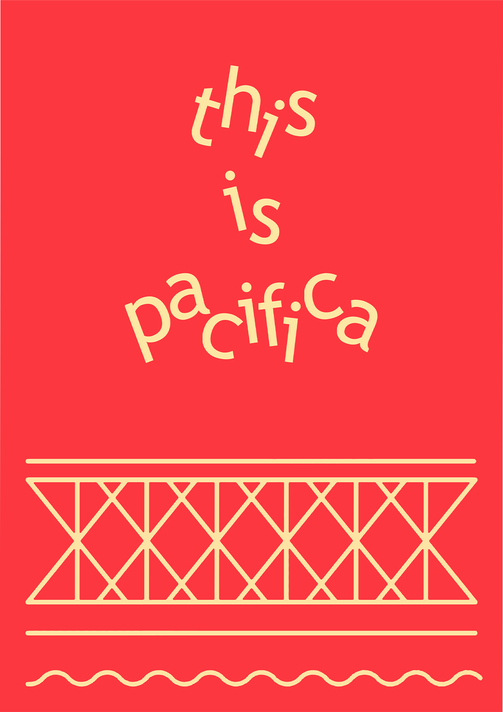
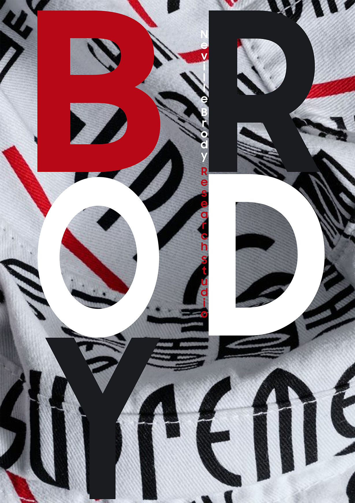
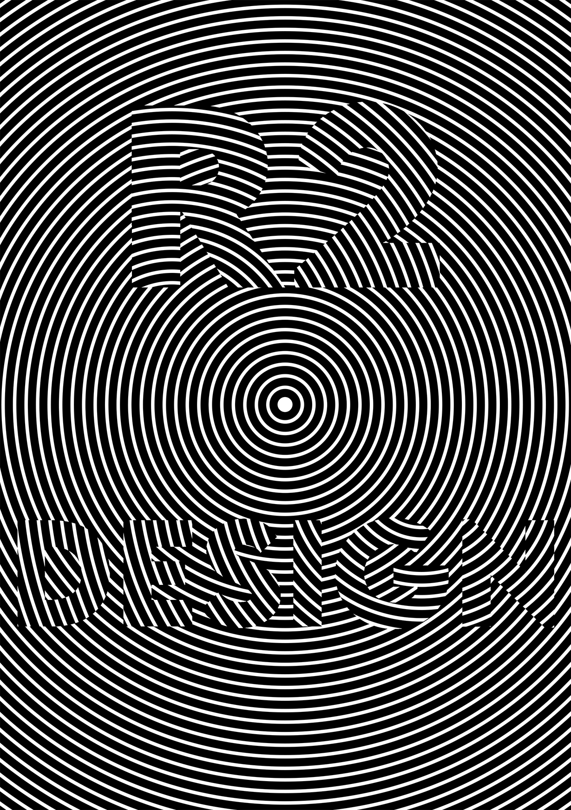
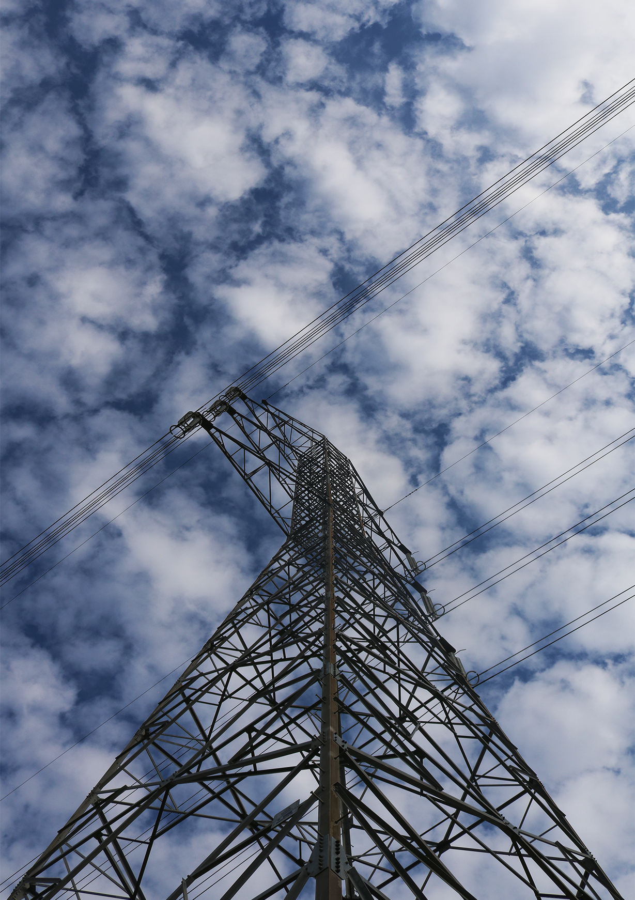
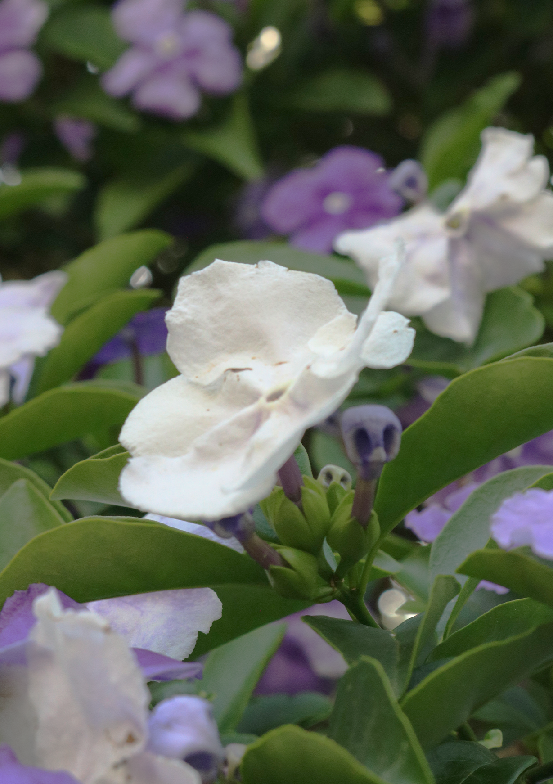
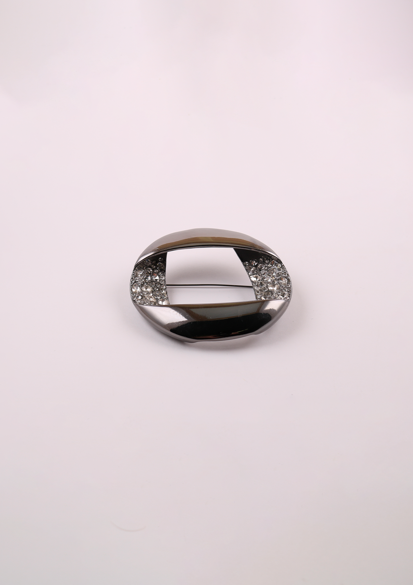
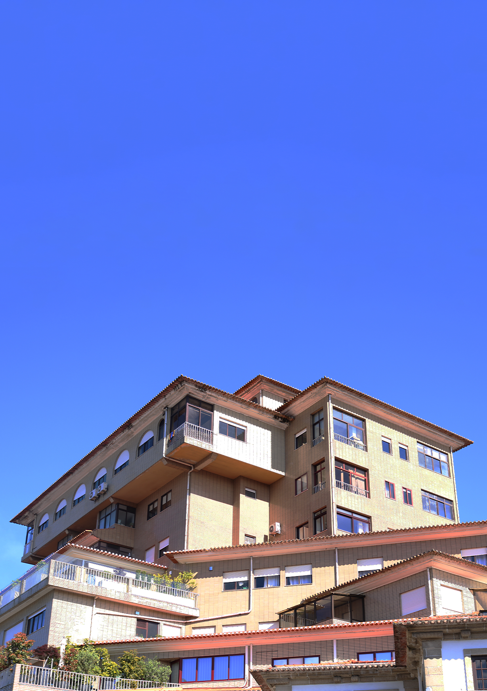